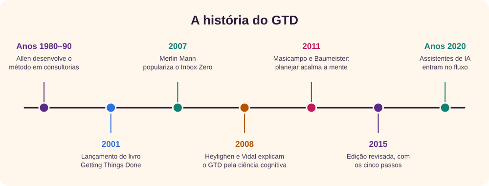
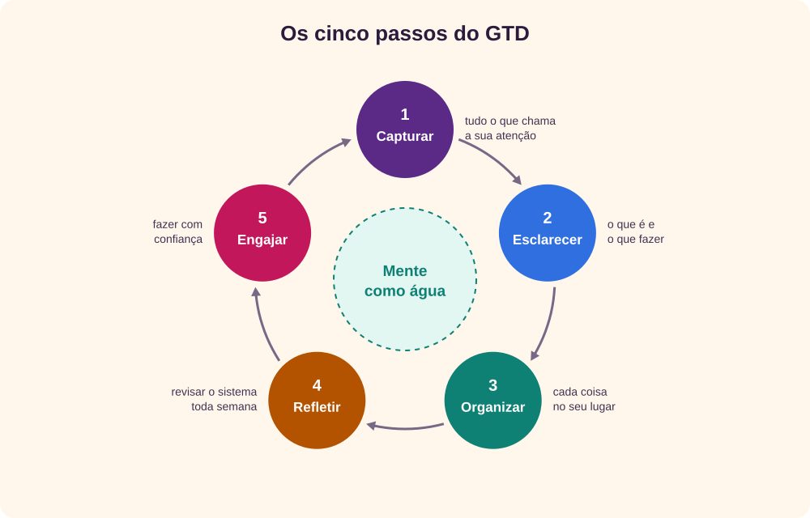
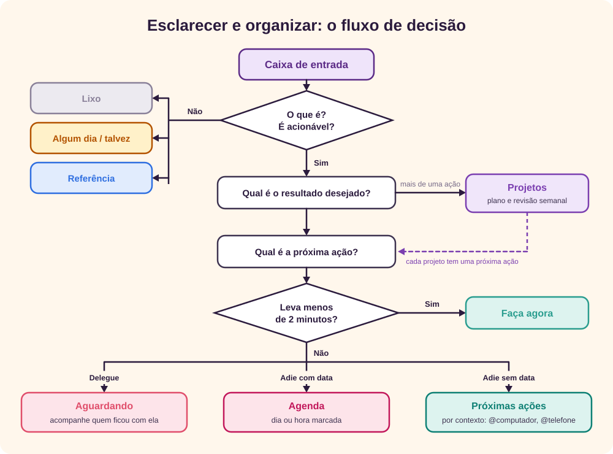
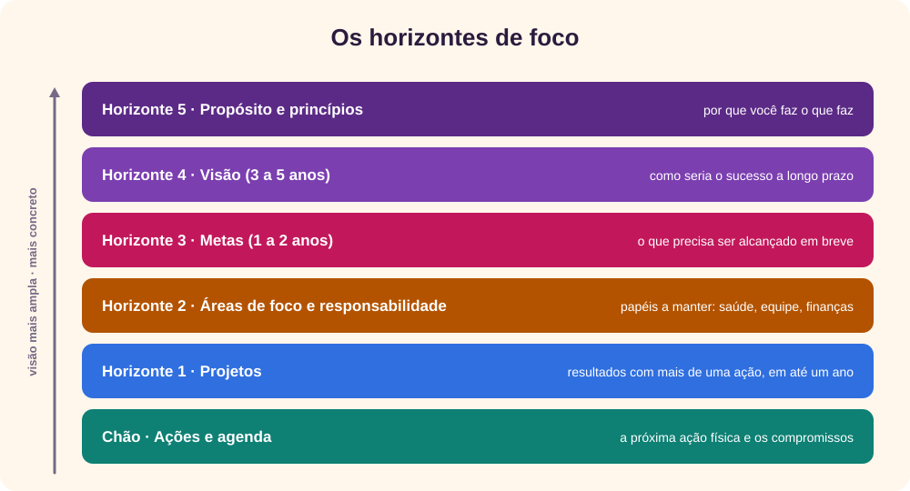
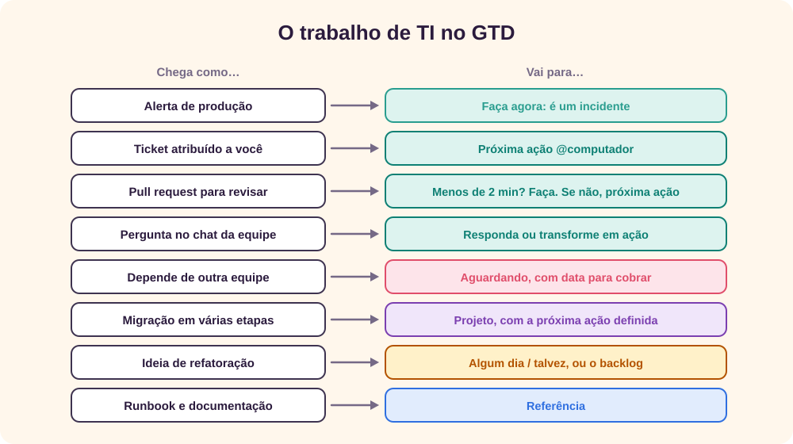
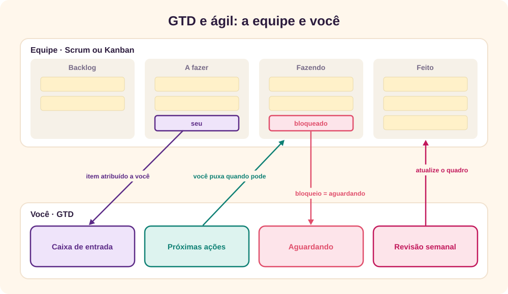
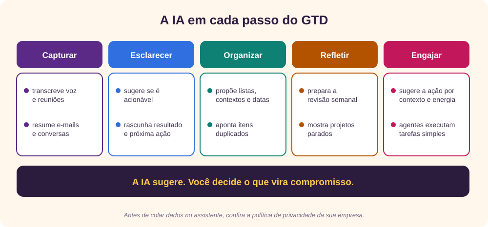
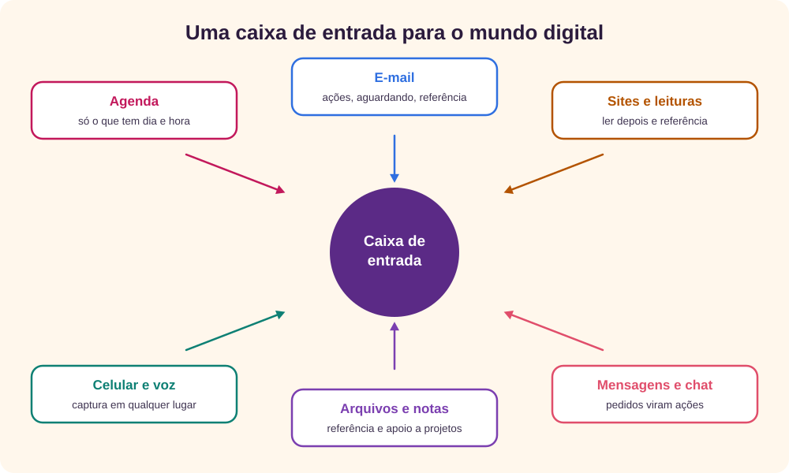

O que é?
- Criador: David Allen
- Livro: 2001
- Edição revisada: 2015
- No Brasil: A arte de fazer acontecer
GTD, sigla de Getting Things Done (“fazer as coisas acontecerem”), é um método de produtividade pessoal criado pelo consultor norte-americano David Allen e apresentado no livro de mesmo nome, de 2001. [1]
A ideia central cabe numa frase que Allen repete com frequência: a mente serve para ter ideias, não para guardá-las. [5] Tudo o que você prometeu a si mesmo ou aos outros e ainda não resolveu, o que ele chama de loop aberto, ocupa espaço na cabeça e volta na hora errada. O GTD propõe tirar esses compromissos da memória, colocá-los num sistema confiável, decidir a próxima ação de cada um e revisar esse sistema com regularidade.
O resultado buscado é o que Allen chama de mente como água: reagir a cada coisa que aparece na medida certa, nem mais, nem menos, como a água responde a uma pedra jogada num lago.
O GTD não é um aplicativo nem uma técnica de prioridades. É um fluxo de trabalho que funciona com papel, com o e-mail, com um gerenciador de tarefas ou com tudo isso junto. O que importa é que o sistema seja completo, esteja fora da cabeça e seja revisado.
História do GTD
David Allen passou por muitas ocupações antes de se dedicar à consultoria em produtividade. Nos anos 1980 e 1990, trabalhando com executivos e equipes, ele foi testando e refinando um conjunto de práticas para lidar com o volume de compromissos do trabalho moderno. Em 2001, reuniu tudo no livro Getting Things Done: The Art of Stress-Free Productivity. [1] [11]

- O livro se torna um sucesso, em especial entre profissionais de tecnologia, que encontram nele uma forma de lidar com e-mail, reuniões e interrupções.
- Merlin Mann, autor do blog 43 Folders, populariza o Inbox Zero, uma aplicação das ideias do GTD ao e-mail: processar a caixa de entrada até esvaziá-la, decidindo o que fazer com cada mensagem. [6]
- Francis Heylighen e Clément Vidal explicam o GTD com conceitos da ciência cognitiva: a memória de trabalho é limitada, e um sistema externo funciona como uma extensão da mente. [3]
- E. J. Masicampo e Roy Baumeister mostram que metas pendentes provocam pensamentos intrusivos, o chamado efeito Zeigarnik, mas que fazer um plano específico para elas elimina esse efeito, mesmo sem cumpri-las ainda. É a base científica de “capturar e definir a próxima ação”. [4] [10]
- Allen publica a edição revisada, que renomeia as etapas como os cinco passos atuais e atualiza os exemplos para o mundo digital. [2]
- Aplicativos de tarefas, notas e e-mail incorporam assistentes de inteligência artificial, que passam a ajudar em vários passos do método.
Como o GTD funciona
Os cinco passos

- Capturar. Recolha tudo o que chama a sua atenção, grande ou pequeno, pessoal ou profissional, em poucas caixas de entrada: um caderno, a caixa de e-mail, um aplicativo. Nada fica só na cabeça.
- Esclarecer. Pegue um item de cada vez e pergunte: o que é isso? É acionável? Se for, qual é o resultado desejado e qual é a próxima ação física e visível?
- Organizar. Coloque o resultado de cada decisão na lista certa: projetos, próximas ações, aguardando, agenda, algum dia/talvez ou referência.
- Refletir. Revise o sistema com frequência, principalmente na revisão semanal, para que ele continue completo e confiável.
- Engajar. Escolha o que fazer em cada momento com confiança, porque você sabe que todas as opções estão no sistema.
O fluxo de decisão
Os passos 2 e 3 seguem sempre o mesmo fluxo. Ele garante que nenhum item volte para a caixa de entrada sem uma decisão.

A regra dos dois minutos é a parte mais conhecida do fluxo: se a próxima ação leva menos de dois minutos, faça agora, porque registrá-la e acompanhá-la custaria mais do que resolvê-la.
As listas
| Lista | O que guarda |
|---|---|
| Caixa de entrada | Tudo o que foi capturado e ainda não foi esclarecido. |
| Projetos | Qualquer resultado que exija mais de uma ação e possa ser concluído em até um ano. Cada um tem sempre ao menos uma próxima ação. |
| Próximas ações | A próxima ação física e visível de cada coisa, separada por contexto: @computador, @telefone, @rua, @escritório, @casa ou o nome de uma pessoa, para as pautas de conversa. |
| Aguardando | O que você delegou ou espera de alguém, com a data em que pediu. |
| Agenda | Só o que tem dia ou hora marcados: compromissos, ações que precisam acontecer num dia certo e informações daquele dia. |
| Algum dia / talvez | Ideias e desejos que você não quer assumir agora, mas não quer esquecer. |
| Referência | Informação útil que não pede ação, organizada para ser encontrada. |
A revisão semanal
É o hábito que mantém o sistema vivo. Uma vez por semana, reserve de 30 minutos a uma hora para três coisas:
- Esvaziar: recolha papéis soltos e anotações, zere as caixas de entrada e anote o que ainda estiver na cabeça.
- Atualizar: revise as próximas ações, a agenda da semana passada e da próxima, a lista aguardando e cada projeto, conferindo se todos têm uma próxima ação.
- Criar: olhe a lista algum dia/talvez e pense em novas ideias e projetos.
Como escolher o que fazer
Na hora de agir, Allen sugere filtrar as opções por quatro critérios, nesta ordem: o contexto em que você está, o tempo disponível, a energia que você tem e, só então, a prioridade. Não adianta a tarefa mais importante exigir o escritório se você está no trânsito.
Os horizontes de foco
A prioridade, por sua vez, vem de olhar o trabalho em diferentes altitudes. Allen descreve seis horizontes, do chão até o propósito:

Para planejar um projeto, Allen propõe ainda o modelo de planejamento natural, em cinco fases: definir o propósito e os princípios, imaginar o resultado, levantar ideias, organizá-las e identificar as próximas ações. [2]
GTD aplicado a TI
Pouca área recebe trabalho por tantos canais quanto TI: tickets, alertas, pull requests, mensagens no chat, reuniões, pedidos no corredor. Allen descreve três tipos de trabalho, e os três convivem no dia de quem trabalha com tecnologia: o trabalho planejado, como as tarefas da sprint; o que aparece de repente, como um incidente; e o trabalho de definir o trabalho, como esclarecer um pedido vago. O GTD ajuda a dar a cada um o seu lugar.

- Poucas caixas de entrada: combine com você mesmo quais canais são caixas de entrada, por exemplo o quadro da equipe, o e-mail e as menções no chat, e processe-os em horários definidos. O resto é ruído.
- Contextos de TI: além de @computador, use contextos como @revisão de código, @deploy, @acesso à VPN ou o nome de um colega, para as pautas da próxima conversa.
- Próximas ações concretas: “Banco de dados” não é ação. “Rodar a migração no ambiente de homologação e anotar o tempo” é.
- Incidente é “faça agora”, mas o pós-incidente é um projeto: a correção definitiva, o runbook e a melhoria do alerta precisam de um projeto com próxima ação, ou serão esquecidos.
- Dívida técnica no algum dia/talvez: ideias de refatoração que não cabem agora vão para essa lista ou para o backlog da equipe, e são revistas na revisão semanal.
- Aguardando com data: chamados abertos com fornecedores ou outras equipes ficam na lista aguardando, com a data do pedido, para você saber quando cobrar.
Exemplo: “Melhorar o deploy” é vago e fica parado. No GTD vira o projeto “Deploy da API automatizado até 30/11”, com a próxima ação “Ler o pipeline atual e listar as etapas manuais (@computador, 30 min)”.
Conciliando com projetos e método ágil
GTD, Scrum, Kanban e a gestão de projetos não competem: atuam em camadas diferentes. O Scrum e o Kanban organizam o trabalho da equipe; a gestão de projetos coordena entregas, prazos e partes interessadas; o GTD organiza os seus compromissos, que incluem a sua parte nesse trabalho e todo o resto da vida. [7] [8]

| No GTD | No ágil e em projetos |
|---|---|
| Projeto | História, épico ou entregável |
| Próxima ação | Tarefa ou subtarefa |
| Aguardando | Impedimento ou dependência |
| Algum dia / talvez | Ideias ainda fora do backlog |
| Revisão semanal | Planejamento e retrospectiva, em escala pessoal |
| Horizontes 2 a 5 | Roadmap, objetivos (OKRs) e visão do produto |
- Uma fonte da verdade por assunto: o quadro da equipe é a referência do trabalho da equipe. Não copie cada cartão para o seu sistema; registre só o projeto ou a próxima ação que dependem de você, com um link para o cartão.
- Puxe, não empurre: como no Kanban, escolha o próximo item quando terminar o atual. O Personal Kanban, de Jim Benson e Tonianne DeMaria Barry, propõe justamente visualizar o trabalho pessoal e limitar o que está em andamento. [9]
- Prazos de projeto na agenda só quando são rígidos: o cronograma fica na ferramenta do projeto. Na agenda entram as reuniões e as datas que não podem mudar.
- Revisão semanal antes do planejamento: chegar ao planejamento da sprint com o seu sistema em dia mostra quanto você realmente pode assumir.
A evolução com a IA
O GTD nasceu no papel e migrou para o computador e o celular. Agora, assistentes de inteligência artificial ajudam em cada um dos cinco passos:

- Capturar: transcrição de notas de voz e resumos automáticos de reuniões e de longas trocas de e-mail facilitam não perder nada.
- Esclarecer: um assistente pode ler um e-mail confuso e sugerir o resultado desejado e a próxima ação. É o passo em que mais se ganha tempo.
- Organizar: aplicativos sugerem projeto, contexto e data para cada tarefa e apontam duplicados.
- Refletir: a IA pode preparar a revisão semanal, listando projetos sem próxima ação, itens aguardando há muito tempo e compromissos da semana seguinte.
- Engajar: agentes com acesso à agenda e ao e-mail já executam tarefas simples, como rascunhar respostas ou propor horários de reunião.
O cuidado principal: esclarecer é decidir o que você vai assumir, e essa decisão continua sendo sua. A IA também erra, inventa detalhes e pode multiplicar o que entra na caixa de entrada. E, antes de colar e-mails ou documentos num assistente, confira a política de privacidade e de uso de dados da sua empresa.
Exemplos de como utilizar no dia a dia em um mundo digital
No mundo digital as caixas de entrada se multiplicam. O segredo é saber, para cada ferramenta, se ela é uma caixa de entrada, uma lista ou uma referência.

Casos de uso
Agenda (Google Agenda, Outlook)
- Guarde na agenda só a “paisagem rígida”: reuniões, ações que precisam acontecer num dia certo e informações daquele dia. Não use a agenda como lista de tarefas.
- Reserve um bloco fixo, por exemplo na sexta-feira à tarde, para a revisão semanal.
- Se quiser proteger tempo para trabalho concentrado, bloqueie períodos, mas escolha o que fazer neles na hora, a partir das próximas ações.
- Processe a caixa de entrada até zerar, uma a três vezes por dia, em vez de reagir a cada notificação. [6]
- Para cada mensagem: apague ou arquive; responda se levar menos de dois minutos; delegue e marque com um rótulo “Aguardando”; ou transforme em tarefa, com o link do e-mail, e arquive.
- Use regras e filtros para que boletins e notificações automáticas nem passem pela caixa de entrada.
Sites e leituras
- Abas abertas são loops abertos. Mande o que quer ler para uma lista de leitura e revise-a na revisão semanal.
- Pesquisa de um projeto fica numa pasta ou página de apoio do projeto; o que é útil para sempre vai para a referência, com uma nota sobre por que guardou.
Mensagens e chat (WhatsApp, Slack, Teams)
- Pedidos feitos no chat viram ações no seu sistema; a conversa não é uma lista de tarefas.
- Use os recursos de “salvar” ou “lembrar” como caixa de entrada e esvazie-os no processamento diário.
- Mensagens “não lidas” só servem para saber o que é novo, não para lembrar compromissos.
Arquivos e notas (Drive, OneDrive, Notion, Obsidian)
- Mantenha a referência simples: poucas pastas, nomes claros e a busca fazendo o resto.
- Cada projeto ativo pode ter uma pasta ou página de material de apoio, separada da lista de ações.
Celular e voz
- Capture em qualquer lugar com uma nota rápida, um widget ou o assistente de voz: “anotar: ligar para o banco sobre a tarifa”.
- Fotografe documentos e mande para a caixa de entrada; desligue notificações que não exigem ação.
Gerenciador de tarefas (Todoist, Microsoft To Do, Things, OmniFocus, TickTick)
- Crie os projetos como projetos e os contextos como etiquetas: @computador, @telefone, @rua.
- Monte uma visão de “próximas ações por contexto” e uma etiqueta “Aguardando” com a data do pedido.
Prompts a serem usados
Os prompts abaixo funcionam com qualquer assistente de IA. Troque o que está entre colchetes pelos seus dados e confira tudo antes de assumir qualquer compromisso.
Quero fazer uma "varredura mental" no estilo GTD. Faça-me perguntas, uma área por vez (trabalho, projetos em andamento, pessoas a quem devo algo, casa, finanças, saúde, aprendizado, ideias), para eu lembrar de todos os compromissos abertos. Ao final, devolva tudo numa única lista, um item por linha, sem organizar.
Aja como meu assistente de GTD. Para cada item da lista abaixo, diga: é acionável? Se não for, classifique como lixo, algum dia/talvez ou referência. Se for, escreva o resultado desejado, diga se é um projeto (mais de uma ação) e proponha a próxima ação física, o contexto (@computador, @telefone, @rua, @escritório) e o tempo estimado. Marque com ⏱ o que leva menos de 2 minutos. Responda numa tabela. [cole aqui a sua lista]
Use o modelo de planejamento natural do GTD para o projeto "[nome do projeto]". 1) Pergunte-me o propósito e os princípios. 2) Ajude-me a descrever o resultado concluído. 3) Faça um brainstorming de tudo o que precisa acontecer. 4) Organize em etapas e dependências. 5) Termine com as próximas ações que posso fazer já, cada uma com contexto e tempo estimado.
Abaixo estão os assuntos e trechos dos e-mails da minha caixa de entrada. Para cada um, sugira: arquivar, apagar, responder agora (menos de 2 minutos), delegar (a quem?) ou virar tarefa (com a próxima ação). Para os que pedem resposta rápida, rascunhe a resposta em até três frases. Não invente informações que não estão no e-mail. [cole aqui os e-mails, sem dados confidenciais]
A partir da transcrição ou das anotações da reunião abaixo, extraia: 1) as próximas ações que são minhas ([meu nome]), com prazo se houver; 2) o que fiquei aguardando de outras pessoas, com o nome de cada uma; 3) decisões tomadas, para a referência; 4) ideias citadas sem compromisso, para algum dia/talvez. Indique a frase da transcrição que justifica cada item. [cole aqui a transcrição ou as anotações]
Conduza a minha revisão semanal do GTD, passo a passo, esperando a minha resposta em cada etapa: esvaziar (anotações soltas, caixas de entrada, o que está na cabeça), atualizar (próximas ações, agenda da semana passada e da próxima, aguardando, cada projeto com a sua próxima ação) e criar (algum dia/talvez, novas ideias). No fim, liste os projetos sem próxima ação e os itens aguardando há mais de uma semana.
Estou em [contexto: escritório, casa, rua], tenho [tempo disponível] e minha energia está [alta, média, baixa]. Destas próximas ações, quais fazem sentido agora? Ordene por adequação ao contexto, ao tempo e à energia e, só depois, pela prioridade, e explique em uma linha cada escolha. [cole aqui a sua lista de próximas ações]
Sou [cargo] numa equipe que usa [Scrum ou Kanban]. Abaixo estão os tickets atribuídos a mim. Para cada um, diga se é uma próxima ação ou um projeto, proponha a próxima ação concreta (com contexto, como @código, @revisão ou @deploy), aponte o que está bloqueado e deve ir para a lista aguardando (de quem?) e o que posso resolver em menos de 2 minutos. Não altere prioridades definidas pela equipe; apenas sinalize conflitos. [cole aqui os tickets: título, descrição curta, status]
Conclusão
Mais de vinte anos depois do livro, o GTD continua atual porque não depende de ferramenta: capturar tudo, esclarecer o que cada coisa significa, organizar no lugar certo, revisar toda semana e agir com confiança funciona no papel, no celular e com IA.
Em TI e em equipes ágeis, ele não substitui o quadro da equipe nem o plano do projeto; organiza a sua parte neles e todo o resto. E a IA, bem usada, tira peso dos passos mais mecânicos, mas a decisão sobre o que vale o seu tempo continua sendo sua.
Para começar, faça uma varredura mental completa hoje, escolha uma única caixa de entrada para o celular e marque na agenda a sua primeira revisão semanal.
Referências
- Allen, David, Getting Things Done: The Art of Stress-Free Productivity, Viking, 2001.
- Allen, David, Getting Things Done: The Art of Stress-Free Productivity, edição revisada, Penguin Books, 2015.
- Heylighen, Francis; Vidal, Clément, “Getting Things Done: The Science behind Stress-Free Productivity”, Long Range Planning, v. 41, n. 6, p. 585–605, 2008.
- Masicampo, E. J.; Baumeister, Roy F., “Consider it done! Plan making can eliminate the cognitive effects of unfulfilled goals”, Journal of Personality and Social Psychology, v. 101, n. 4, p. 667–683, 2011.
- David Allen Company, site oficial do GTD, acesso em 17/10/2026, gettingthingsdone.com.
- Mann, Merlin, “Inbox Zero”, 43 Folders, acesso em 17/10/2026, 43folders.com/izero.
- Schwaber, Ken; Sutherland, Jeff, The Scrum Guide, 2020, scrumguides.org.
- Anderson, David J., Kanban: Successful Evolutionary Change for Your Technology Business, Blue Hole Press, 2010.
- Benson, Jim; DeMaria Barry, Tonianne, Personal Kanban: Mapping Work, Navigating Life, Modus Cooperandi Press, 2011.
- Wikipedia (em inglês), “Zeigarnik effect”, acesso em 17/10/2026, en.wikipedia.org/wiki/Zeigarnik_effect.
- Wikipedia (em inglês), “Getting Things Done”, acesso em 17/10/2026, en.wikipedia.org/wiki/Getting_Things_Done.